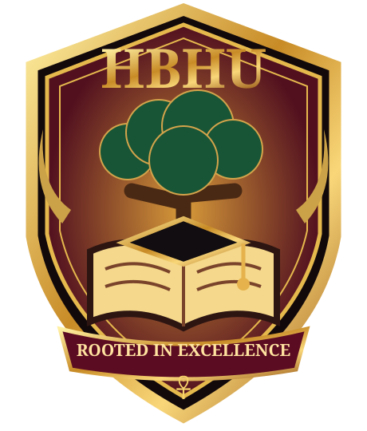

Member School Directory
Explore participating schools, their distinctive programs, and their institutional stories as the directory grows.

A collective home for Black-owned and operated holistic health schools, their students, graduates, educators, and supporters. We build belonging, traditions, school pride, and collective excellence in Black holistic health education.
HBHU (Historically Black Holistic University) is not a single university, but a collective identity and community that brings together independent Black-owned holistic health schools to celebrate, collaborate, and elevate the next generation of Black healing professionals.


Explore participating schools, their distinctive programs, and their institutional stories as the directory grows.
Each school keeps its own identity, leadership, programs, credentials, and admissions.
Celebrate the educators, founders, graduates, and healing traditions shaping our community.
Students and graduates across generations and institutions can build connections, share pride, and honor the paths that brought them into holistic health.
Our vision is a shared celebration with reunions, fellowship, alumni recognition, academic showcases, and school spirit. Dates and details have not yet been announced.
A proposed challenge celebrating botanical knowledge and responsible practice.
Educational case discussions and inter-school collaboration.
A future celebration of community, creativity, and collegiate pride.
HBHU is developing its founding network. Participation details and institutional interest information will be published as they are finalized.